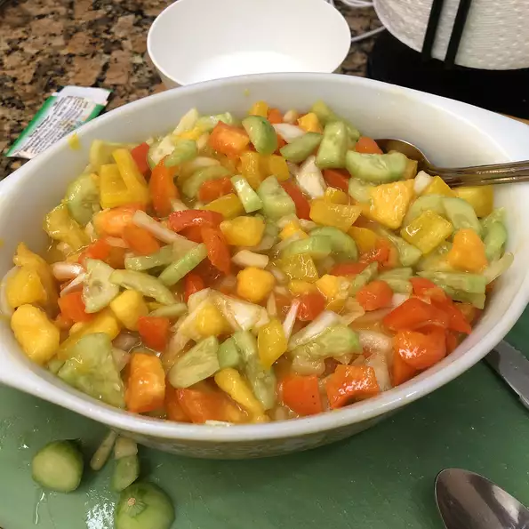

Avacado-Mango Salsa

Hype This Salsa!!
This salsa is quick and easy to make, plus it's delicious!
Once you taste it, you won't be able to stop eating it!
Some Ingridients
- 1 mango - peeled, seeded and diced
- 1 red bell pepper, seeded and diced
- 3/4 cup chopped red onion
How do I make this salsa?
- Toss together mango, bell pepper, and onion in a bowl.
- Add sugar, olive oil, and vinegar in the bowl.
- Gently fold in diced avocado.
- Season with salt.